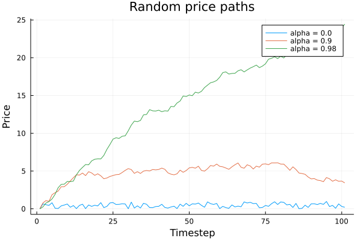
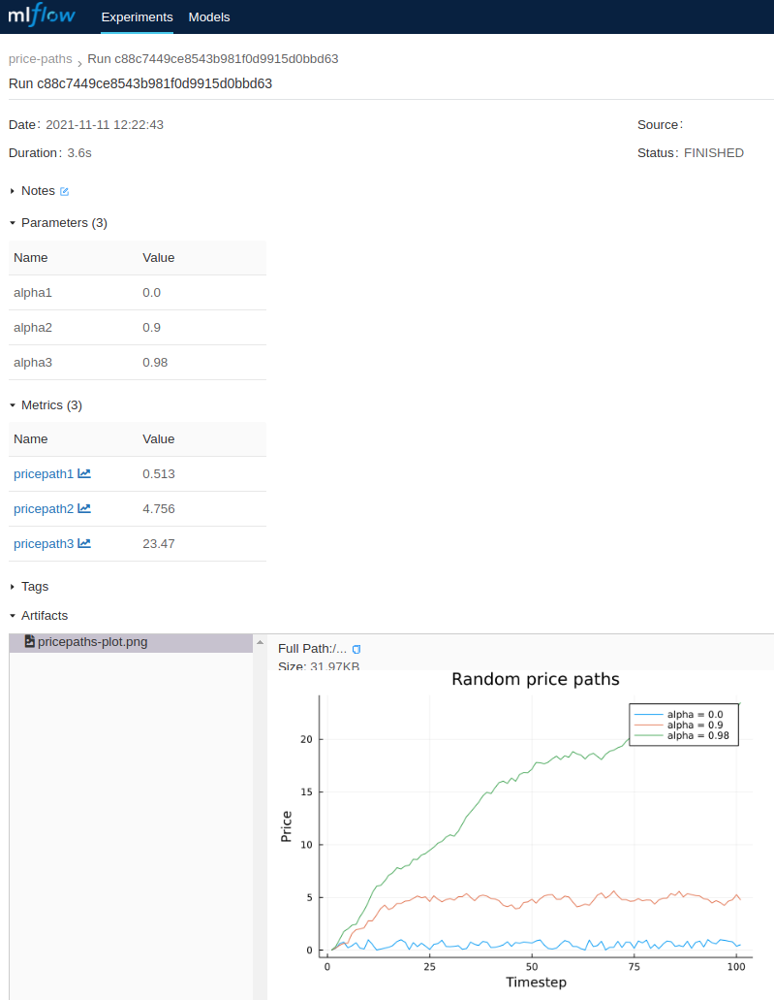
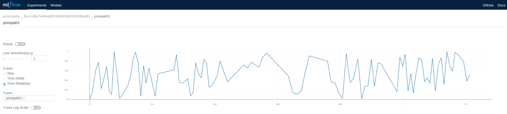

Tutorial
For a more comprehensive MLFlow tutorial, refer to its documentation.
This tutorial assumes that you are familiar with MLFlow concepts and focuses on usage of MLFlowClient.
Suppose that you are developing a method getpricepath(α, n) which generates a random price path using α. This example is adapted from QuantEcon Chapter 1.
using Plots
using Random
αs = [0.0, 0.9, 0.98]
n = 100
p = plot()
function getpricepath(α, n)
x = zeros(n + 1)
x[1] = 0.0
for t in 1:n
x[t+1] = α * x[t] + rand()
end
x
end
pricepaths = [getpricepath(α, n) for α in αs]
for (idx, pricepath) in enumerate(pricepaths)
plot!(p, pricepath,
title="Random price paths",
label="alpha = $(αs[idx])",
xlabel="Timestep", ylabel="Price"
)
end
pThis could result in the following plot:

Now, suppose that you are interested in turning this into an experiment which stores its metadata and results in MLFlow using MLFlowClient. You could amend the code like this:
using Plots
using MLFlowClient
using Random
# Parameters
αs = [0.0, 0.9, 0.98]
n = 100
"Method that generates price paths of length `n` based on `α`"
function getpricepath(α, n)
x = zeros(n + 1)
x[1] = 0.0
for t in 1:n
x[t+1] = α * x[t] + rand()
end
x
end
p = plot()
# Create MLFlow instance
mlf = MLFlow("http://localhost:5000/api")
# Initiate new experiment
experiment_id = createexperiment(mlf; name="price-paths")
# Create a run in the new experiment
exprun = createrun(mlf, experiment_id)
# Log parameters and their values
for (idx, α) in enumerate(αs)
logparam(mlf, exprun, "alpha$(idx)", string(α)) # MLFlow only supports string parameter values
end
# Obtain pricepaths
pricepaths = [getpricepath(α, n) for α in αs]
# Log pricepaths in MLFlow
for (idx, pricepath) in enumerate(pricepaths)
plot!(p,
pricepath,
title="Random price paths",
label="alpha = $(αs[idx])",
xlabel="Timestep",
ylabel="Price"
)
logmetric(mlf, exprun, "pricepath$(idx)", pricepath)
end
# Save the price path plot as an image
plotfilename = "pricepaths-plot.png"
png(plotfilename)
# Upload the plot as an artifact associated with the MLFlow experiment's run
logartifact(mlf, exprun, plotfilename)
# remote temporary plot which was already uploaded in MLFlow
rm(plotfilename)
# complete the experiment
updaterun(mlf, exprun, "FINISHED")This will result in the folowing experiment created in your MLFlow which is running on http://localhost/:

You can also observe series logged against individual metrics, i.e. pricepath1 looks like this in MLFlow:
